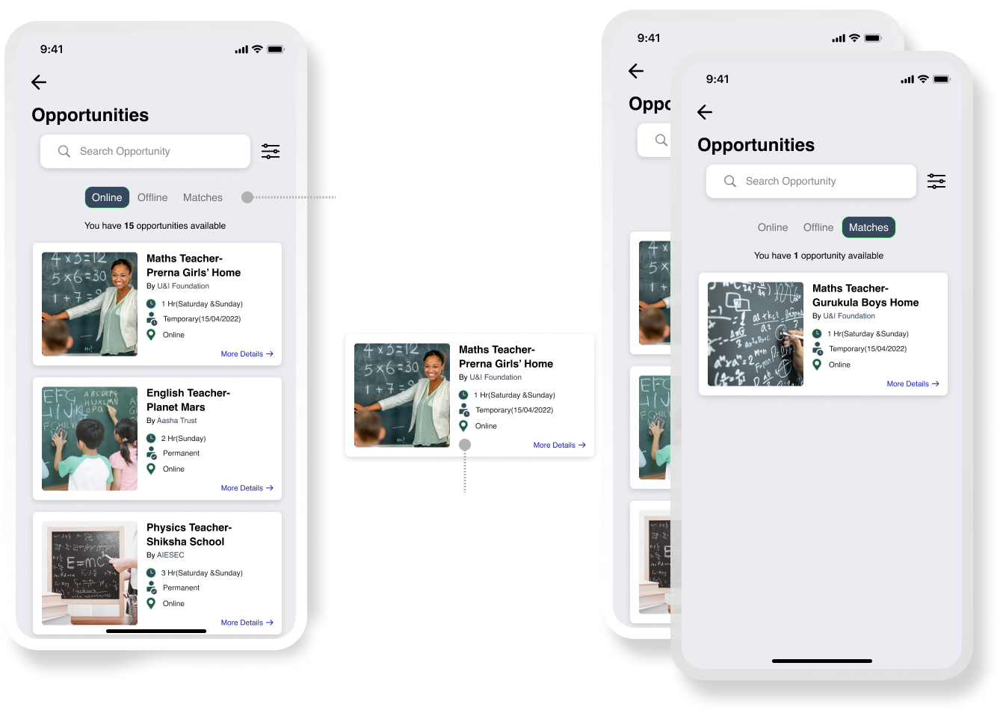
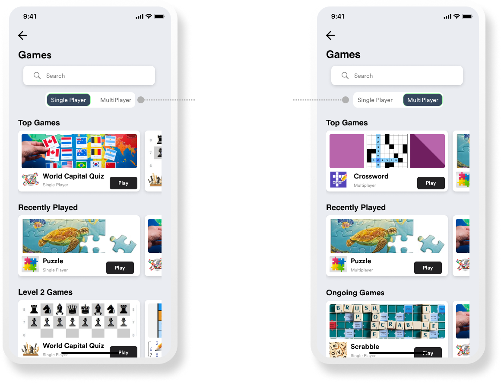
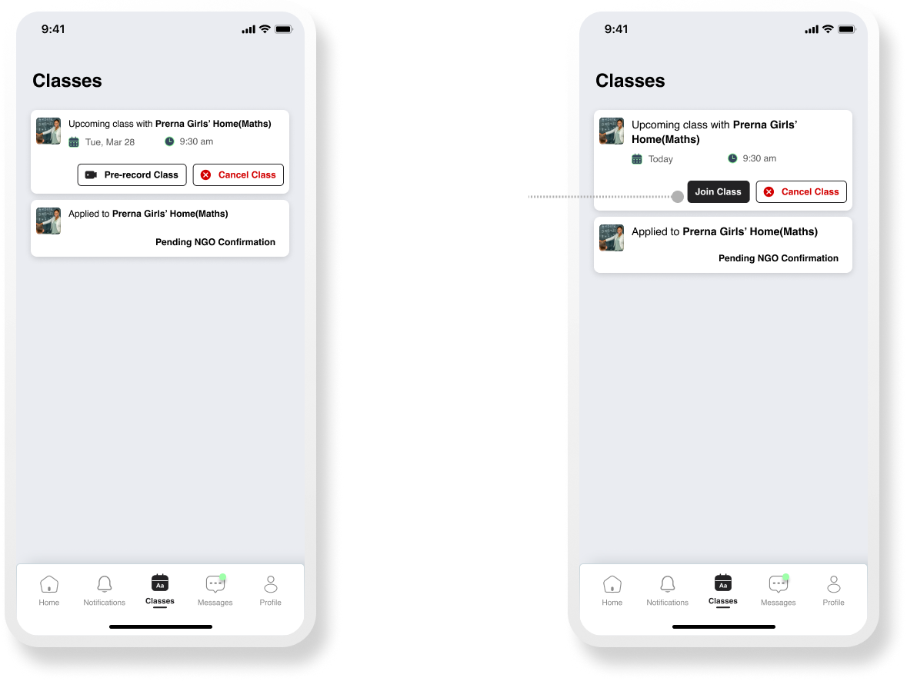
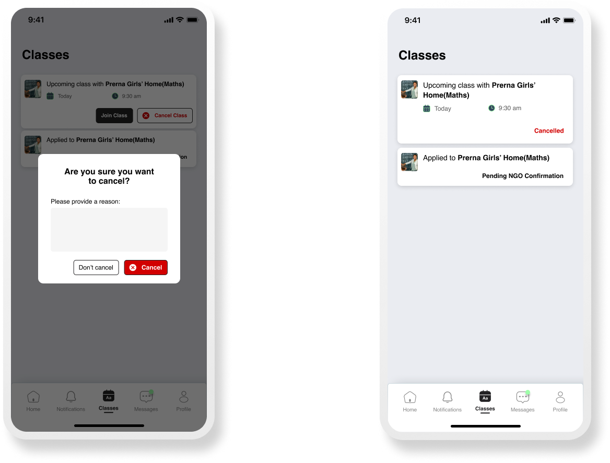

← Back to Work
← Back to Work
Project Vision
The goal of this app is to create an education platform that connects volunteers to teach, with NGOs in need of teachers, as well as to promote volunteering by making the app simple, accessible, and fun.
My Role
User Experience Research, User Experience Design, Interface Design, Prototype
Timeline
4 Weeks
Project Type
Personal Case Study
A little background...
After finishing my architecture degree, I changed my career path to UX/UI design and have been working from home since 2021 due to the Pandemic. Since I had free time outside of work and on weekends, I wanted to volunteer to teach because I enjoyed my experience volunteering for AIESEC to teach kids when I was in college. So, naturally, I began looking for volunteering organisations to teach online in order to sign up for one, and I expected a lot of options and an easy process — but to my surprise, I could not find any until I found one through a friend on Instagram.
Issues I encountered
- The websites showed ‘Current cohorts full, needs to wait another month or few more months to join’..
- Complicated signup processes that discouraged sign-ups.
- No responses after filling out forms.
- Non-functional or broken websites.
- Websites that weren’t catchy and hence, were not making people want to sign up.
- Volunteers often did not know job details until after signup.
Now, this means that there must be more Graduates, Students, homemakers and working professionals like me who want to volunteer to teach but couldn’t find a good platform that is simple and engaging! This also means that maybe a kid could have got a good teacher but couldn’t because of the lack of accessibility and motivation!
Plan of Action
This is the design process I followed to cover the scope within the timeline.
Looking around to find the need for a solution
While the economy of India has appeared to have boomed over the last 25 years, most growth has been in urban areas where large multinational corporations base their software development headquarters. In spite of all this, by the government estimate, out of 200 million children in the age group of 6 to 14 in India, around 59 million do not attend school(ref). Of the rest, who are currently in school, four out of every 10 children beginning to attend school will drop out before completing their primary school education.
A study in 2002 found that these conditions in India are partially due to educational poverty, defined as the deprivation of basic education and literacy. Only 6% of the income from poor households is invested in education and health, while the majority is spent on other necessities such as food and fuel. (ref)
In an article by India Today, there is some light on why education is still a distant dream, for many underprivileged children in the country. According to the report, one of the primary reasons is an "extreme shortage of qualified and dedicated teachers."
Most of the kids don’t even have basic education to read or write or speak. Every graduate has completed 12th std and could be of help. Malala Yousufzai said, “One child, one teacher, one book & one pen can change the world” and we don’t know who might change the world if we don't give them a chance.
Stating the Problem of a lot of underprivileged children.
-
For volunteers:

-
For NGOs:

Virtual Volunteering
Despite the fact that the pandemic caused a decline in volunteers owing to a variety of personal factors, it also gave rise to a new normal, remote, or virtual presence in different sectors. People have been participating in remote activities due to the multiple advantages, whether they are at job, school, or even volunteering. A few of the benefits of virtual volunteering;.
-
For Volunteers:
- More time to volunteer
- Flexibility in scheduling, location, and level of involvement
- A unique outlet for skills or passions that aren’t met by physical volunteering
- More positions for disabled or very remote volunteers
- Fulfilling education or career volunteer milestones
-
For NGOs:
- Increased access to more qualified volunteers
- More ways to save money on operating costs
- An easier way to access more data for your organization
- Professional-level communications, branding, and outreach
We live in a society where technology easily bridges the gap between a teacher and a student. Hundreds of Teaching Apps emerged after 2020 helping connect teachers from any part of the world to a student. According to reports, a lot of NGOs during the pandemic have managed to get Laptops/ computers to underprivileged students but still have a hard time finding volunteers to teach. Now let's connect these points to create a solution for the eradication of educational poverty in society.
Solutions that can change some lives(Hopefully)
I devised potential solutions to the problems that I could deduce from the assumptions. However, these would have to be validated later through qualitative and quantitative analysis.
- An app that connects numerous NGOs and volunteers where the volunteers can view the opportunities posted by NGOs and decide based on their skill set and preference.
- Volunteers can sign up and select subjects and other preferences.
- To determine eligibility, a basic test could be made compulsory to complete the profile and to start volunteering for any organisation.
- Volunteer organisations with requirements and keywords for easy discovery.
- Option to upload live as well as pre-recorded classes for volunteer time flexibility.c
- Few small brain training games for volunteers on different topics to keep them entertained as well as help in personal knowledge enhancement.
- Community networking to stay connected with other volunteers and activities.
- Rewards for volunteers with certificates based on completing a certain number of sessions, as volunteers who feel valued, acknowledged, and appreciated by being told they are making a difference and by having their efforts recognised in the organisation are more likely to continue to volunteer.
Note:
- Due to time constraints, I have designed the experience and interface for the volunteers' part of the app only.
- Now, there are way more aspects to consider for this area itself but I have done a very surface-level study as of now and have come up with this solution. Although, I am sure developing this idea will help a lot of children break out of the poverty cycle that is running in their families for years)
User Study
This particular app would require a user study on three potential user groups; NGO, non-volunteer and Volunteer.
User Interviews
I interviewed a manager and leader at U&I (the NGO I volunteer with), several current volunteers, and a few non-volunteers to understand motivations, blockers and pain points.
NGO insights
- Recruiting volunteers is hard — outreach is mostly through college campaigns which are limited and require permissions.
- Volunteers often leave due to time constraints or long recruitment processes.
- Lack of motivating factors or recognition reduces volunteer retention.
Volunteer insights
- Most volunteers found opportunities through friends or social media stories.
- Many enjoyed remote teaching because it removed travel friction and still felt rewarding.
- Long sign-up processes almost made some volunteers give up.
Non-volunteer insights
- Many are not comfortable with technology or don't know where to look for volunteering roles.
- Time commitment is a major concern — short, flexible opportunities are more attractive.
- Some would volunteer only if the commitment was small or better recognized.
Research Analysis & Solutions
Synthesising secondary and primary research revealed clear opportunity areas: reduce onboarding friction, provide clear status updates, offer flexible class formats, and create motivating recognition for volunteers.
Key problems to solve
- Long/complex sign-up causing drop-offs.
- No clear feedback/status after application.
- Restricted discovery of opportunities.
- Low recognition and motivation for volunteers.
Proposed solutions (to test & validate)
- Create an app that aggregates NGO opportunities and lets volunteers filter by subject, timing and preferences.
- Allow volunteers to upload live and pre-recorded classes to support flexible volunteering.
- Introduce a basic eligibility/test step to ensure minimal preparedness and simplify matching.
- Implement community features and gamified micro-tasks or games to keep volunteers engaged.
- Provide rewards and certificates after completing a certain number of sessions to improve retention.
Note: Due to the short timeline, the project focuses on the volunteer-facing flows and interfaces only.
Wireframes & Final UI
I produced hand-sketched wireframes and iterated multiple times to determine content hierarchy, card layout types, and a thumb-friendly tab bar. The final interface uses clear card patterns for opportunities, an accessible tab bar (3–5 primary items), and an onboarding flow that reduces friction.
Design decisions
- Content priority & placement: High-priority content is placed for quick scanning.
- Thumb zone: Main CTAs and navigation are within easy reach on mobile.
- Cards: Different card types for opportunity lists, matches and classes with clear CTA hierarchy.
- Tab bar: Limited to 3–5 items to reduce cognitive load.
Interface & Visuals
Colour palette: vibrant yet subtle to keep the app lively but professional. Typeface: Helvetica for clarity and neutral readability.
Final screens
Login & Sign Up
Home
Opportunities
Opportunity Details

Games

Donate and Community
Notification

Classes
 Messages and Profile

Testing & Refining
I ran usability tests with three participants who completed key tasks (apply for an opportunity, view status, cancel an upcoming session). Key feedback and changes:
- “After applying, we don't know where the status of the application will be seen” → added a clear “Status / Classes” pathway and a button next to Applied to take the user to the Classes screen.
- “How will I know if I am cancelling the next class or the entire job?” → changed copy to confirm: “Are you sure you want to cancel the upcoming class?”
- “The matches option should be first so that we know if there are any matches first…” → moved Matches to be the default landing content so users see matches first.
After these refinements the flows were clearer and users felt more confident applying and managing their volunteer commitments.
Notes & Next Steps
There are many additional product and research directions (NGO-facing workflows, admin dashboards, offline/low-bandwidth support, partnerships with colleges and corporates). This case study focused on an MVP for volunteer onboarding, matching, and flexible class delivery.
Summary
The proposed V-Ed platform reduces friction, improves discoverability and recognition for volunteers, and adds flexible mechanisms (live + recorded classes) so more people can contribute to education access.